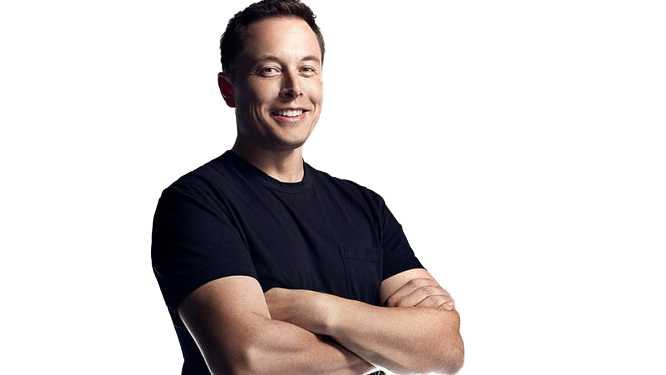

born June 28, 1971 (age 51) Pretoria, Transvaal, South Africa
He is the son of a Canadian mother and a South African father. He has a younger brother and sister. Musk's parents divorced when he was 10 and he moved with his father to Canada. He attended Queen's University in Ontario for two years before transferring to the University of Pennsylvania, where he earned bachelor's degrees in economics and physics.
Musk moved to California in 1995 to attend Stanford University for a Ph.D. in energy physics, but dropped out after two days to pursue his entrepreneurial dreams. In 1999, he founded X.com, an online financial services/payments company which later became PayPal. In 2002, PayPal was acquired by eBay for $1.5 billion and Musk made $165 million from the sale of his shares.
In 2002, Musk founded SpaceX with the goal of reducing space transportation costs and enabling the colonization of Mars. In 2008, SpaceX became the first privately funded company to launch a liquid-fueled rocket into orbit around Earth. In 2012, SpaceX launched its first commercial spacecraft and became the first private company to send a cargo payload to the International Space Station (ISS).
In 2003, Musk co-founded Tesla Motors with Martin Eberhard and Marc Tarpenning with the goal of producing affordable electric cars for mass consumption. Tesla Motors went public in 2010 and is now one of the most valuable car companies in the world with a market capitalization of over $50 billion as of 2020
Musk also co-founded SolarCity in 2006 with his cousins Peter and Lyndon Rive as an effort to reduce dependence on fossil fuels by providing renewable energy solutions at an affordable cost for residential customers across America. SolarCity was acquired by Tesla Motors in 2016 for $2 billion dollars making it one of Elon’s most successful investments yet.
© 2023 | MARGELsoft. All Rights Reserved.